Testbericht Lernplattform
Allgemein 5/5 bestanden
✓ OKApp startet, Live-Verbindung zum Ordner steht📷 10.1 s
Status: Live synchronisiert
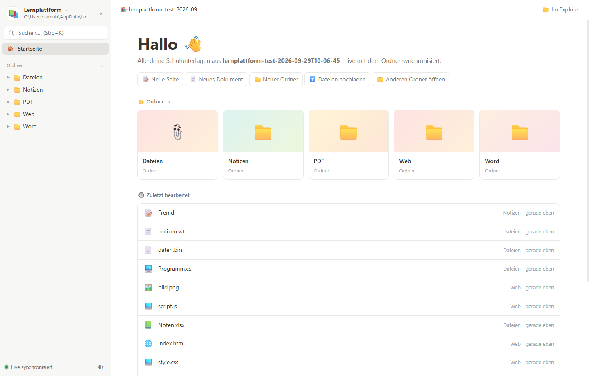
✓ OKSchneller Wechsel direkt nach dem Speichern verliert nichts2.6 s
Beide Änderungen gespeichert
✓ OKSpeicherzeit: Änderung liegt in unter 2 s im Ordner0.9 s
630 ms vom Tastendruck bis zur Datei
✓ OKDunkles Design📷 13.2 s
umgeschaltet
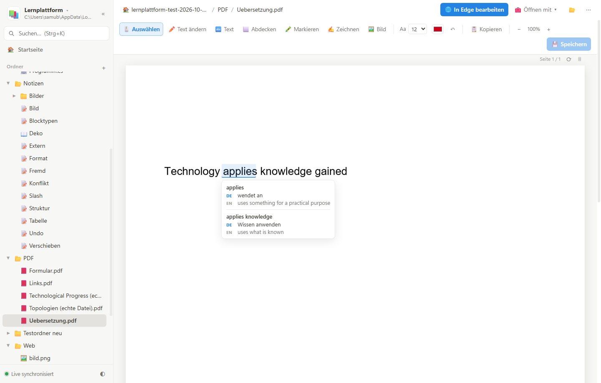
✓ OKKeine JavaScript-Fehler während aller Tests0.0 s
keine
Seiten 14/14 bestanden
✓ OKNeue Seite über „Neue Seite“ anlegen und Titel = Dateiname0.4 s
Datei „Testseite Notizen.md“ angelegt
✓ OKAlle Blocktypen per Markdown-Kürzel📷 11.2 s
24 Zeilen Markdown erzeugt
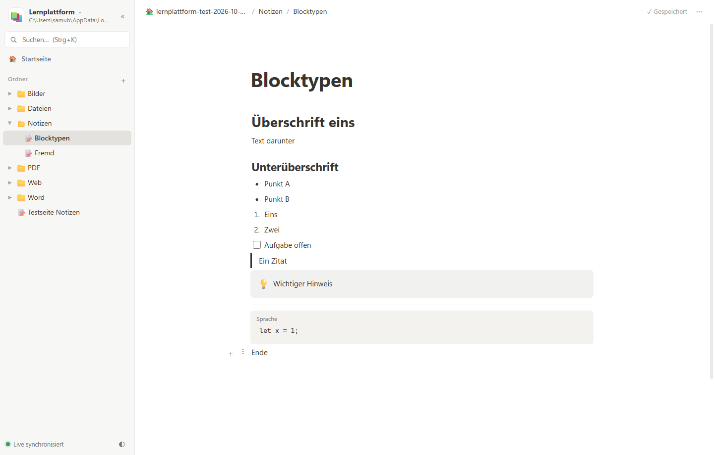
✓ OKSlash-Menü: filtern und Block einfügen📷 11.0 s
Filter „num“ → 1.Nummerierte ListeListe mit Nummern
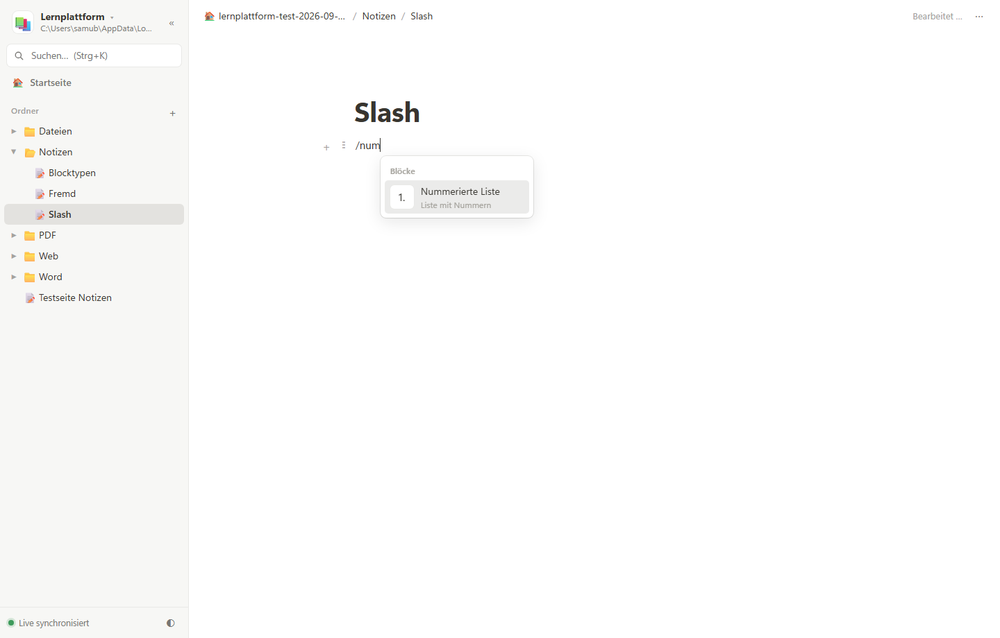
✓ OKFett, kursiv, Code, Markierung und Link über die Formatierungsleiste📷 11.4 s
**fett** *kursiv* `code` ==mark== [link](https://example.org)
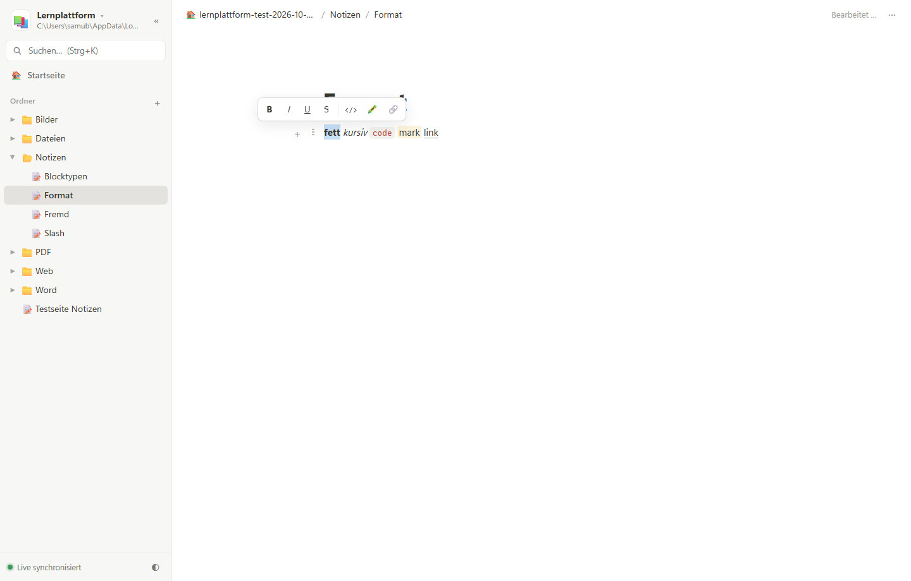
✓ OKTabelle: anlegen, mit Tab ausfüllen, Zeile und Spalte hinzufügen📷 11.7 s
4 Zeilen × 4 Spalten gespeichert und wieder geladen
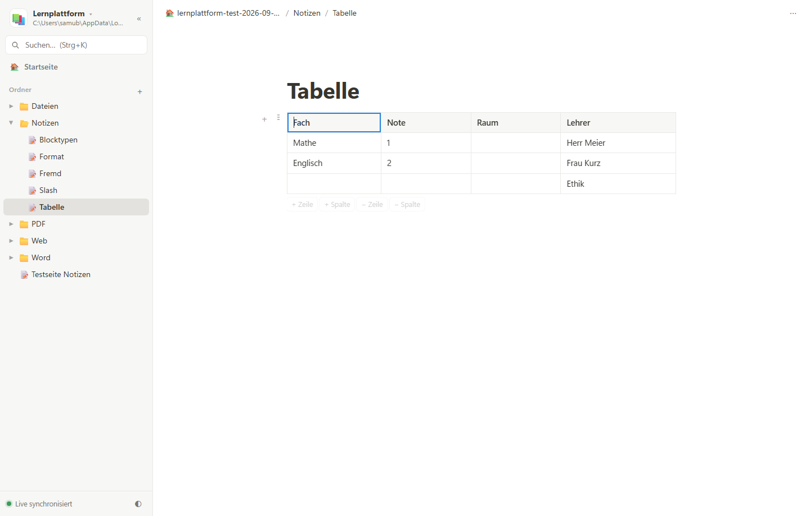
✓ OKRückgängig (Strg+Z) und Wiederholen (Strg+Y) – auch für Blöcke2.2 s
Rückgängig: „Erster Absatz|Zweiter Absatz“ → „Erster Absatz“ · Wiederholen: „Erster Absatz|Zweiter Absatz|Dritter“
✓ OKEnter teilt, Rücktaste verbindet, Tab rückt Listen ein2.2 s
Teilen, Verbinden und Einrücken gespeichert
✓ OKBild per Strg+V einfügen und Größe ändern📷 11.1 s
 · Datei: Notizen/Bilder/Bild-20260929100657.png
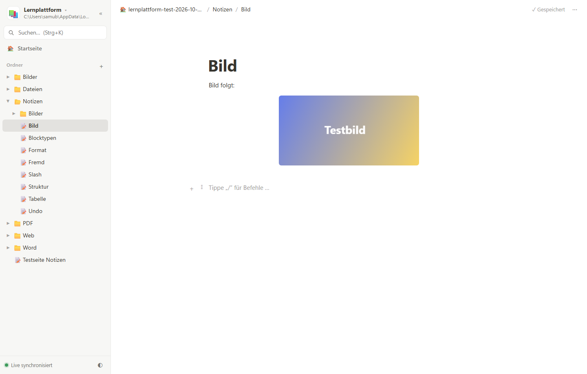
✓ OKBlock über das ⋮⋮-Menü nach unten verschieben0.9 s
Neue Reihenfolge: B, A, C
✓ OKSymbol (Emoji) und Titelbild setzen📷 11.2 s
--- icon: 📖 cover: gradient:9 ---
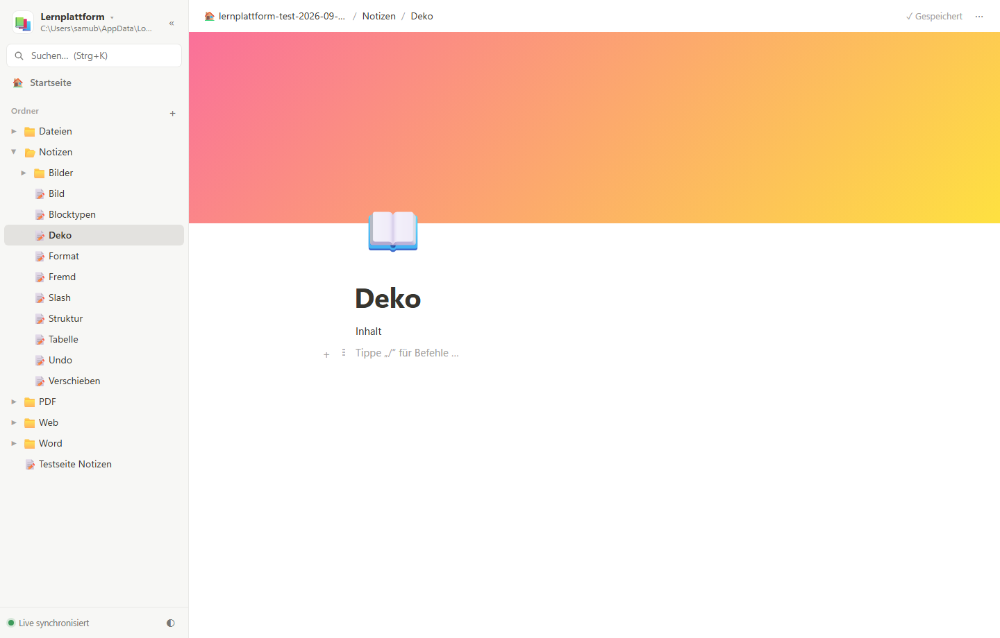
✓ OKÄnderung im Ordner (außerhalb der App) erscheint sofort0.5 s
Editor hat sich automatisch aktualisiert
✓ OKKonflikt: außen geändert während ungespeicherter Eingabe → Nachfrage📷 10.8 s
Banner erschienen, „Meine Version behalten“ gespeichert
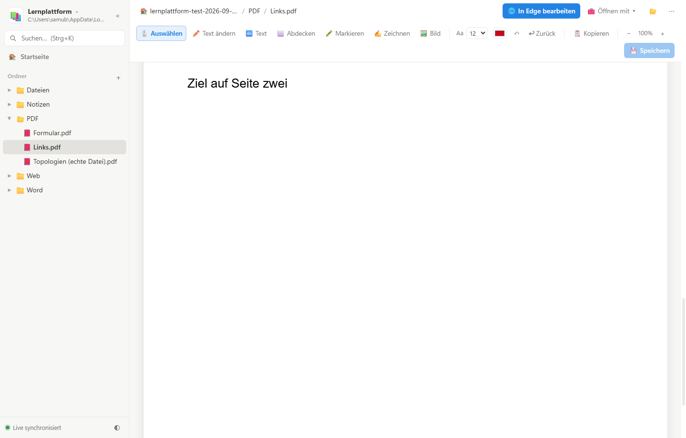
✓ OKFremde Markdown-Datei wird beim bloßen Öffnen nicht verändert2.3 s
Tabellen, HTML und Fußnoten bleiben Byte für Byte erhalten
✓ OKMarkdown hin und zurück (15 Muster)0.0 s
15 Muster identisch
Dateien 14/14 bestanden
✓ OKNeuen Ordner anlegen (Dialog)📷 10.5 s
Ordner „Testordner“ angelegt
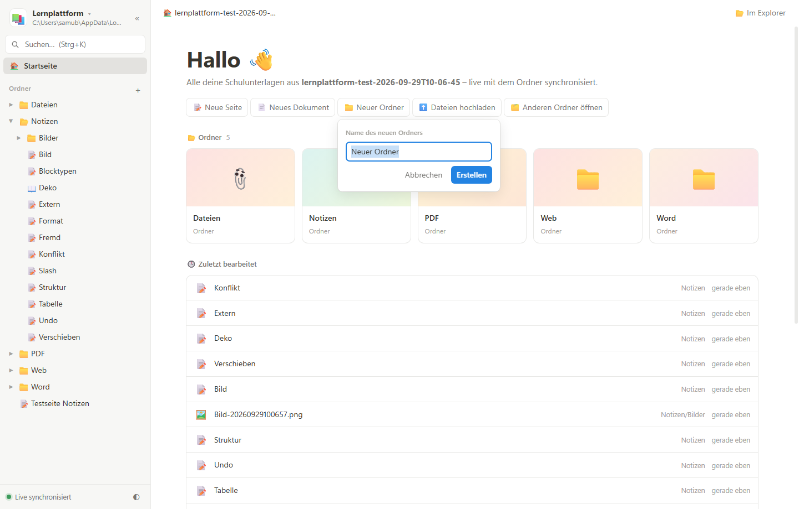
✓ OKOrdner per Rechtsklick umbenennen📷 10.2 s
„Testordner“ → „Testordner neu“
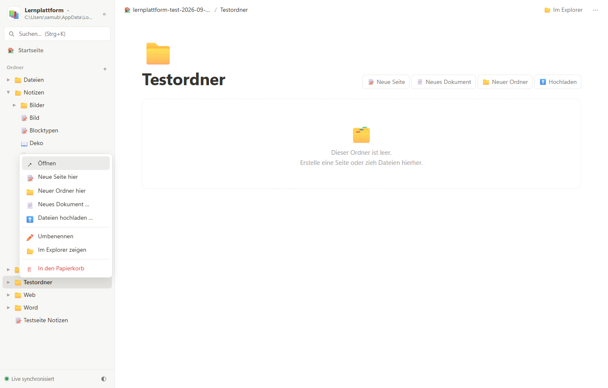
✓ OKDatei per Drag & Drop in einen Ordner verschieben0.4 s
Verschoben nach „Testordner neu“
✓ OKDateien vom PC in die Ordneransicht ziehen (Hochladen)📷 10.8 s
2 Dateien hochgeladen und angezeigt
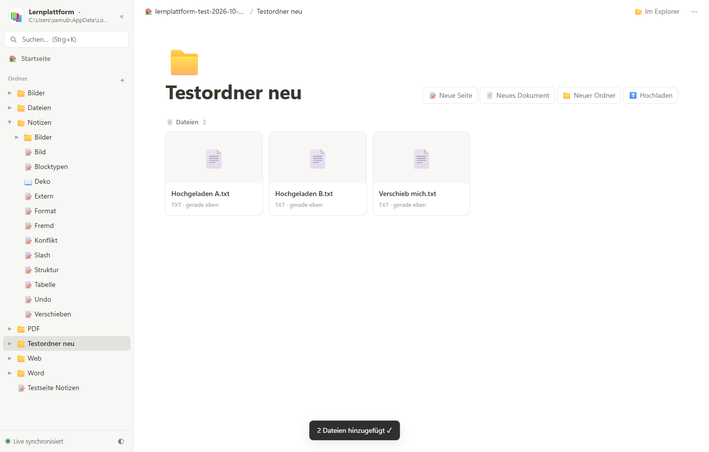
✓ OKSuche findet Dateien in Unterordnern📷 10.3 s
2 Treffer für „hochgeladen“
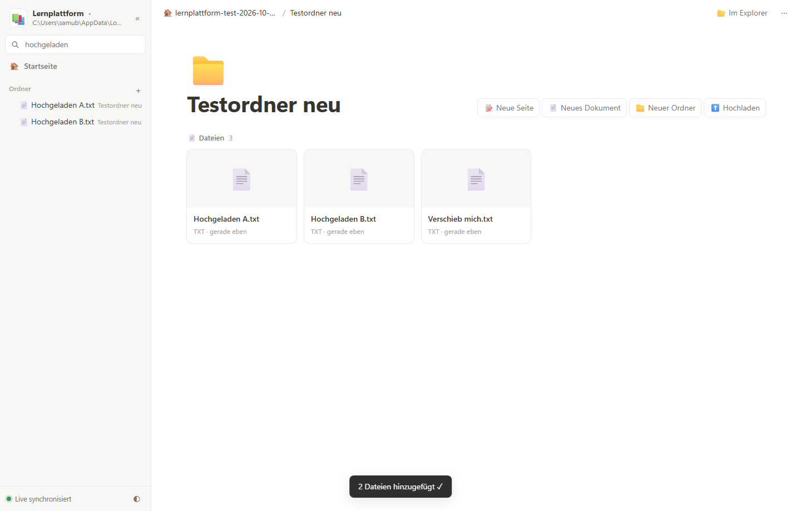
✓ OKAußen angelegte und gelöschte Dateien erscheinen/verschwinden im Baum0.5 s
Baum folgt dem Ordner live
✓ OKCode-Datei (.cs) bearbeiten und automatisch speichern📷 11.2 s
Speichern und Aktualisieren in beide Richtungen
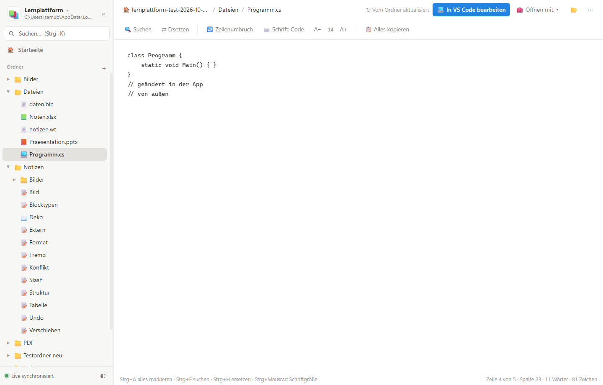
✓ OKHTML-Datei als Vorschau: CSS, Bild und Skript werden geladen📷 10.6 s
Skript lief · CSS aktiv (rgb(200, 0, 0)) · Bild geladen (1 px)
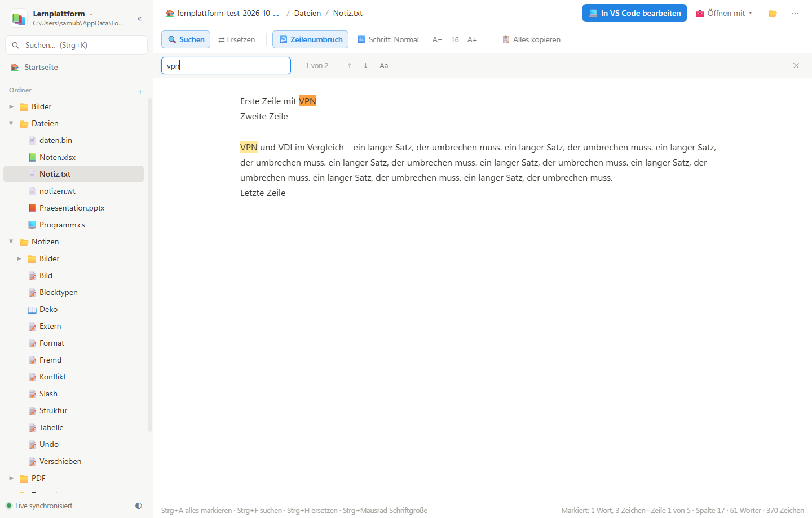
✓ OKHTML-Skripte sind abgeschottet (kein Zugriff auf deine Dateien)0.0 s
Zugriff auf /api blockiert · auch „Im Browser öffnen“ läuft in der Sandbox
✓ OKHTML geteilt: Code ändern → Vorschau folgt live, Datei wird gespeichert📷 11.0 s
Vorschau aktualisiert und Datei gespeichert
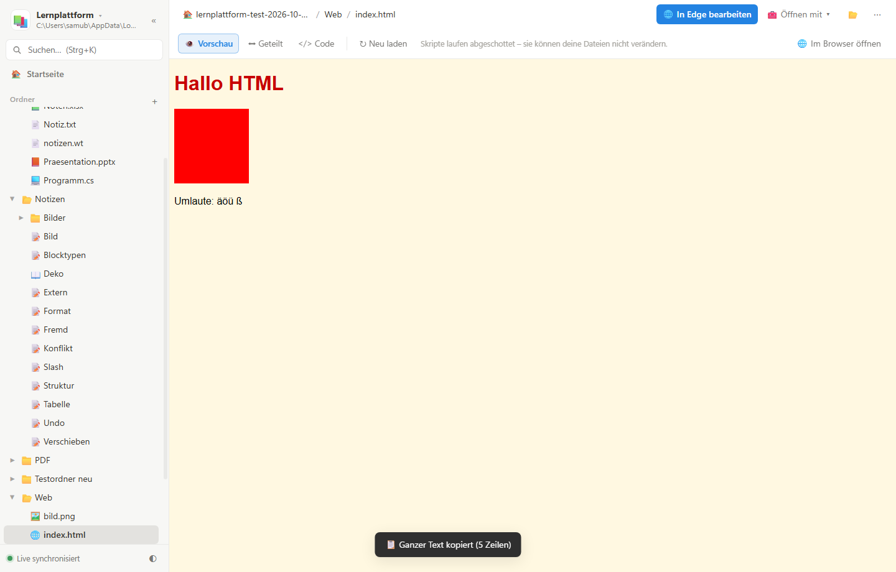
✓ OKUnbekannte Endung mit Text → Editor, Binärdatei → Infokarte📷 10.6 s
.wt → Texteditor · .bin → Infokarte
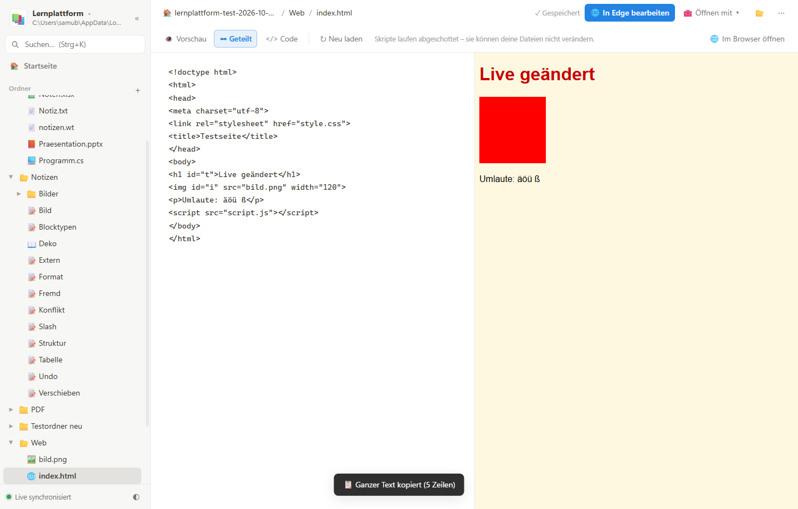
✓ OKVorschau: Excel, PowerPoint📷 10.6 s
Excel ok · PowerPoint: 2 Folien
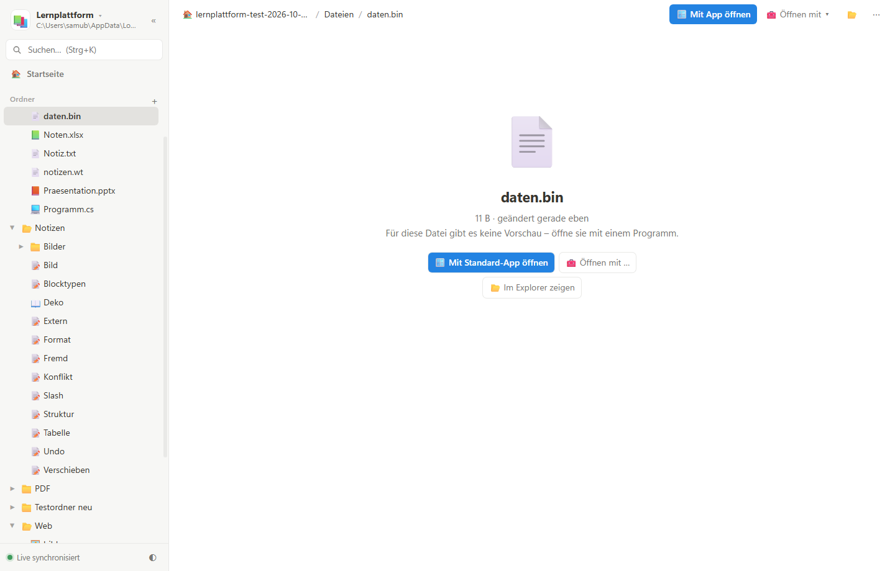
✓ OKNeue Word-, Excel- und PowerPoint-Dokumente aus Vorlagen0.2 s
Neu.docx (0 B), Neu.xlsx (6170 B), Neu.pptx (0 B)
✓ OKLöschen verschiebt in den Papierkorb0.6 s
Datei im Windows-Papierkorb
Word 12/12 bestanden
✓ OKAlle Absätze und Tabellenzellen sind bearbeitbar📷 10.4 s
12 bearbeitbar, 0 gesperrt
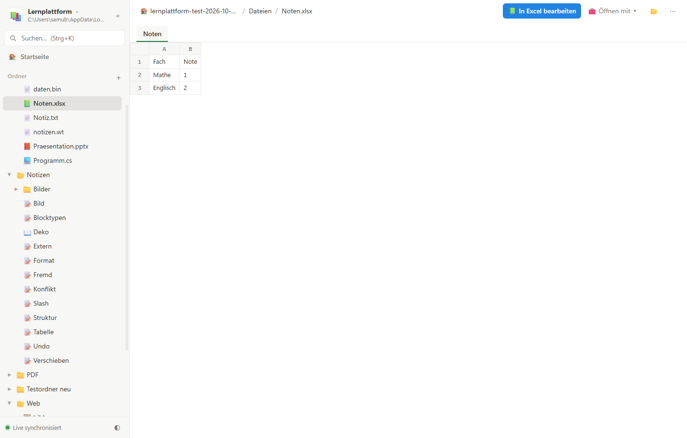
✓ OKIn leere Tabellenzelle schreiben und Zelle leeren0.5 s
Zelle beschrieben, andere Zelle geleert
✓ OKEnter teilt einen Absatz, Rücktaste verbindet ihn wieder0.9 s
geteilt → gespeichert → verbunden → gespeichert
✓ OKFett, kursiv, unterstrichen, Farbe, Markieren📷 10.7 s
w:rPr = b → i → color → highlight → u (Schema-Reihenfolge korrekt)
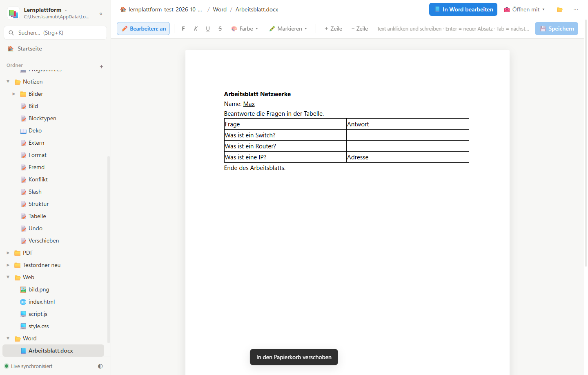
✓ OKTabellenzeile einfügen, ausfüllen und wieder löschen📷 11.0 s
4 → 5 → 4 Zeilen
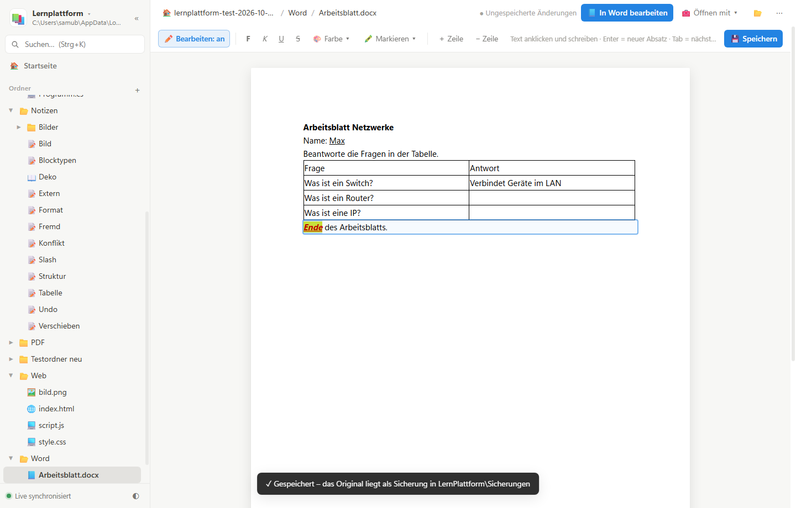
✓ OKUmlaute, Sonderzeichen und Emoji0.5 s
äöüß € → 😀 gespeichert
✓ OKDatei in einem anderen Programm gesperrt → verständliche Meldung, danach klappt es📷 16.8 s
Meldung: „Die Datei ist gerade in einem anderen Programm geöffnet (z. B. Word). Schließe sie dort und speichere erneut.“
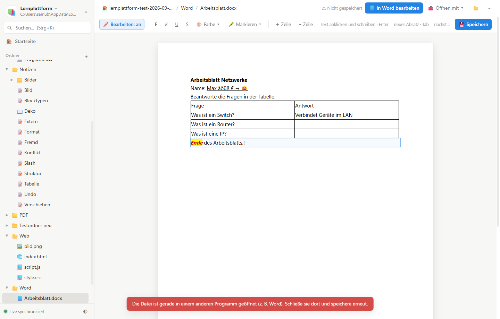
✓ OKAußen geändert bei ungespeicherten Änderungen → Nachfrage1.3 s
Nachfrage erschienen, eigene Änderung gespeichert
✓ OKWerkzeugleiste bleibt beim Scrollen sichtbar📷 11.1 s
nach 13180 px Scrollen noch oben, 49 px hoch
✓ OKSicherungskopie des Originals beim ersten Speichern0.0 s
Genau eine Sicherung: 2026-09-29-10-07-12_Arbeitsblatt.docx
✓ OKEchte Schuldatei (Quiz): Zuordnung, Tabelle ändern, speichern📷 11.0 s
630 von 630 Absätzen bearbeitbar
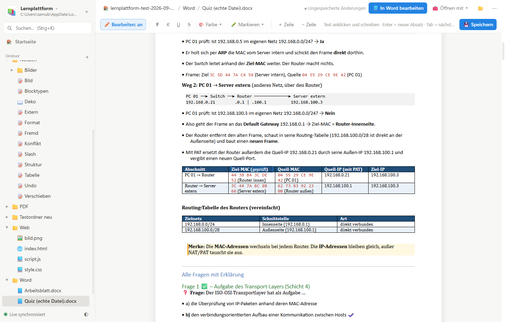
✓ OKPrüfung durch Microsoft Word: Dateien öffnen ohne Reparatur4.3 s
Arbeitsblatt.docx: 16 Absätze, 1 Tabellen · Quiz (echte Datei).docx: 726 Absätze, 18 Tabellen
PDF 15/15 bestanden
✓ OKPDF anzeigen: Seiten, Text und Formularfelder0.4 s
3 Seiten, 5 Formularfelder erkannt
✓ OKText mit der Maus markieren und kopieren (Strg+C)📷 10.4 s
Markiert und kopiert: „Arbeitsblatt Topologien“
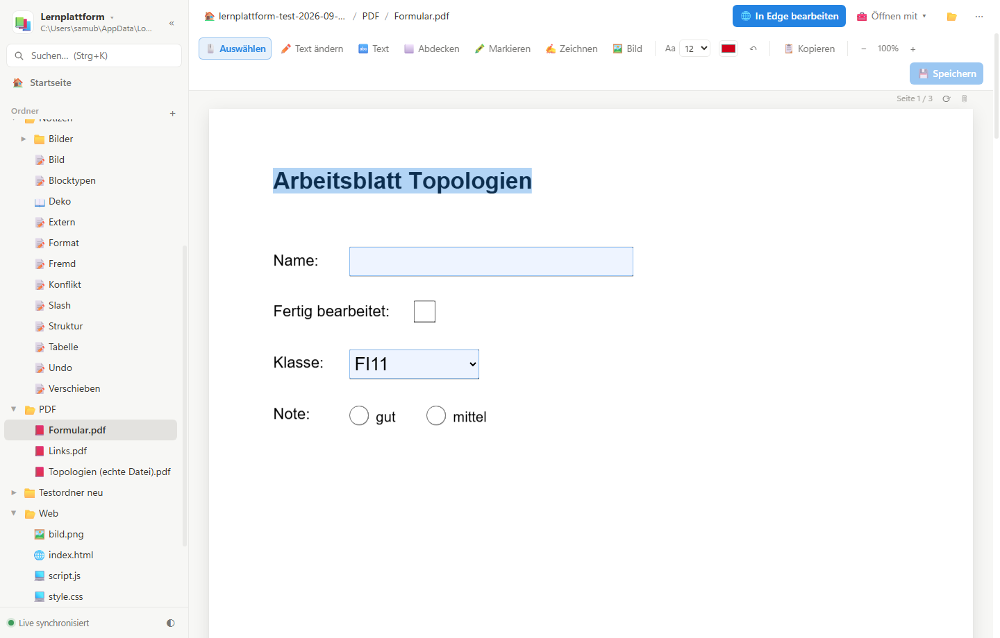
✓ OK„Text kopieren“ kopiert den ganzen Text aller Seiten0.1 s
143 Zeichen aus 3 Seiten · Meldung: ✓ Text kopiert (134 Zeichen, 3 Seiten)
✓ OKEchte Schuldatei: Absatz mit der Maus markieren und kopieren📷 10.9 s
127 Textstücke auf Seite 1 · kopiert: „Wenn ein Netzwerk (oder ein Netzwerk-Segment) der Bus- Topologie folgt, dann gibt es eine …“
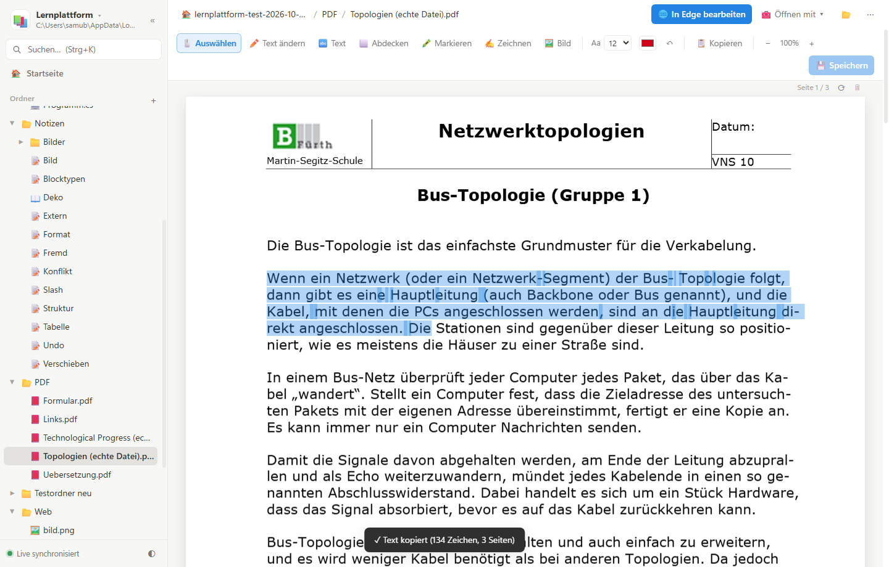
✓ OKFormular ausfüllen: Textfeld, Kästchen, Liste, Optionsfeld📷 10.8 s
{"name":"Max Müller","fertig":true,"klasse":"FI12","note":"mittel"}
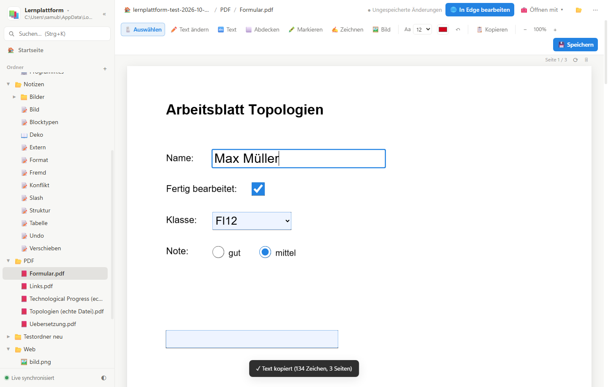
✓ OKVorhandenen Text ändern📷 10.9 s
Neuer Text im PDF gefunden
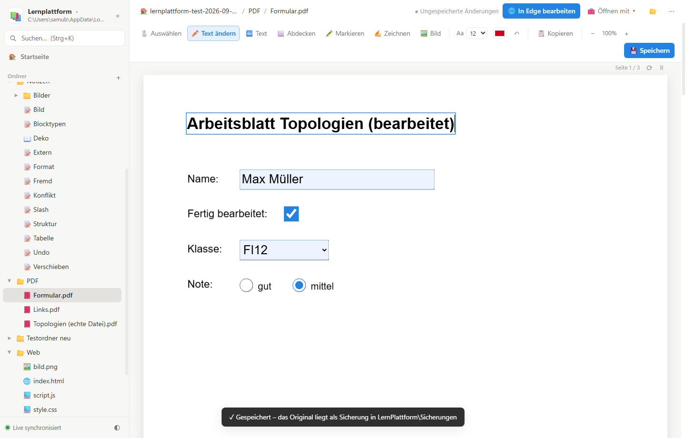
✓ OKNeuen Text mehrzeilig mit Umlauten schreiben1.0 s
Beide Zeilen im PDF · Zeichen ohne Arial-Glyphe (✓) → „?“
✓ OKAbdecken, Markieren und Zeichnen (Pixelprüfung)📷 11.7 s
Abdecken: 1720→0 dunkle Pixel · Markierung: 100 % gelb · Zeichnung: 1836 rote Pixel
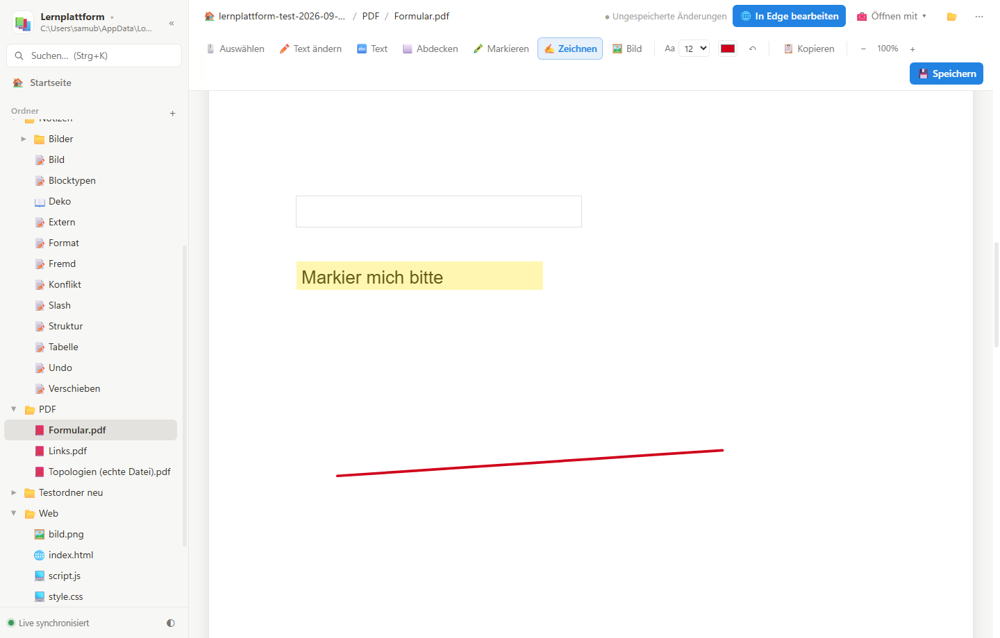
✓ OKBild einfügen (z. B. Unterschrift), vergrößern und speichern📷 11.4 s
Bild eingefügt, Breite 200 → 232 pt, im PDF vorhanden
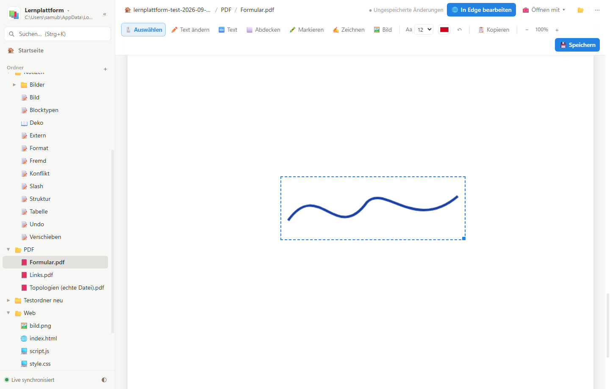
✓ OKEingefügten Text verschieben und mit Entf löschen0.6 s
verschoben um 65 pt, danach gelöscht
✓ OKWerkzeugleiste bleibt beim Scrollen sichtbar0.3 s
nach 4035 px Scrollen noch oben
✓ OKRückgängig und Zoom1.3 s
Rückgängig ok · Zoom 1100 → 1320 px
✓ OKSeite drehen und Seite löschen1.8 s
Seite 3 gedreht (90°), dann gelöscht → 2 Seiten
✓ OKEchte Schuldatei (Topologien): Text ändern und markieren📷 11.6 s
Überschrift geändert, im PDF-Text gefunden
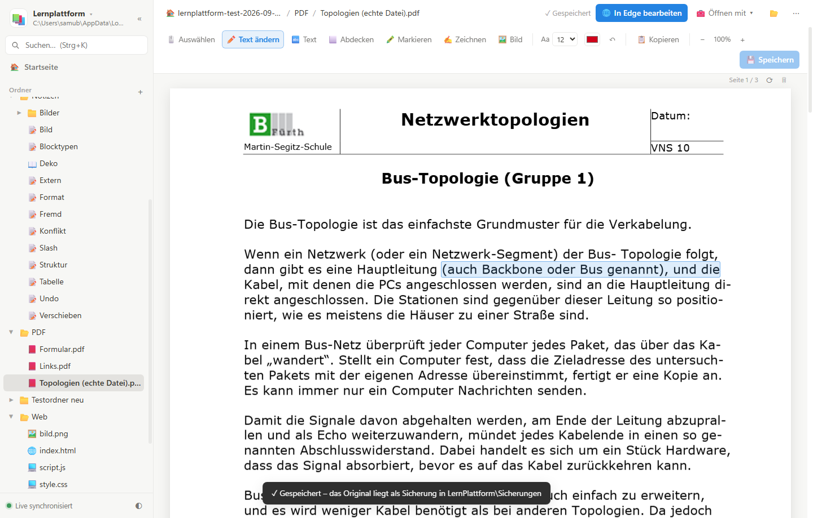
✓ OKLinks im PDF: Webseite, Sprung im Dokument, andere Datei, Adresse im Text📷 12.8 s
5 Links erkannt · Web, Text-Adresse und E-Mail geöffnet · Sprung zu Seite 2 · Datei-Link öffnet Formular.pdf in der App
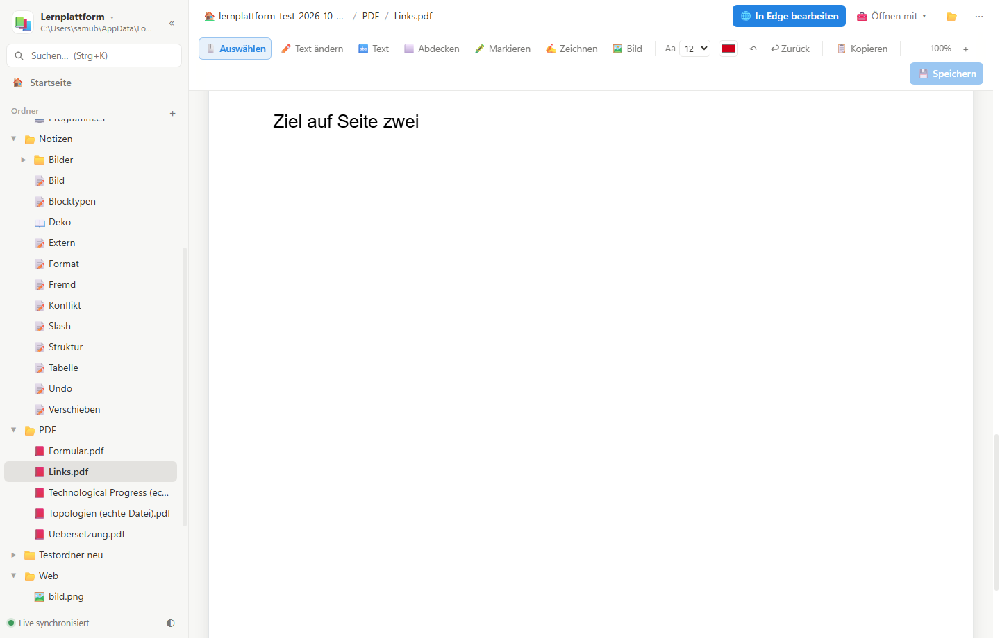
Ordner 4/4 bestanden
✓ OKAnderen Ordner über den Windows-Dialog hinzufügen📷 20.8 s
Verknüpft: C:\Users\samub\AppData\Local\Temp\lernplattform-test-zweiter-ordner-2026-09-29T10-06-45
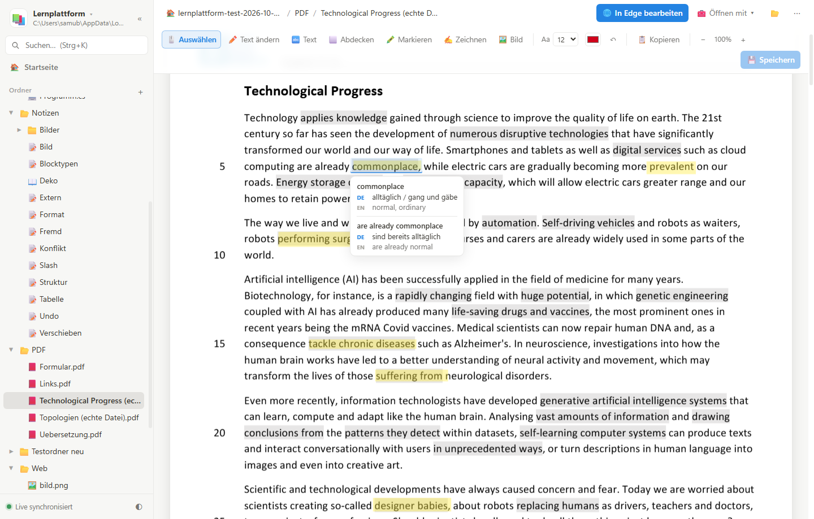
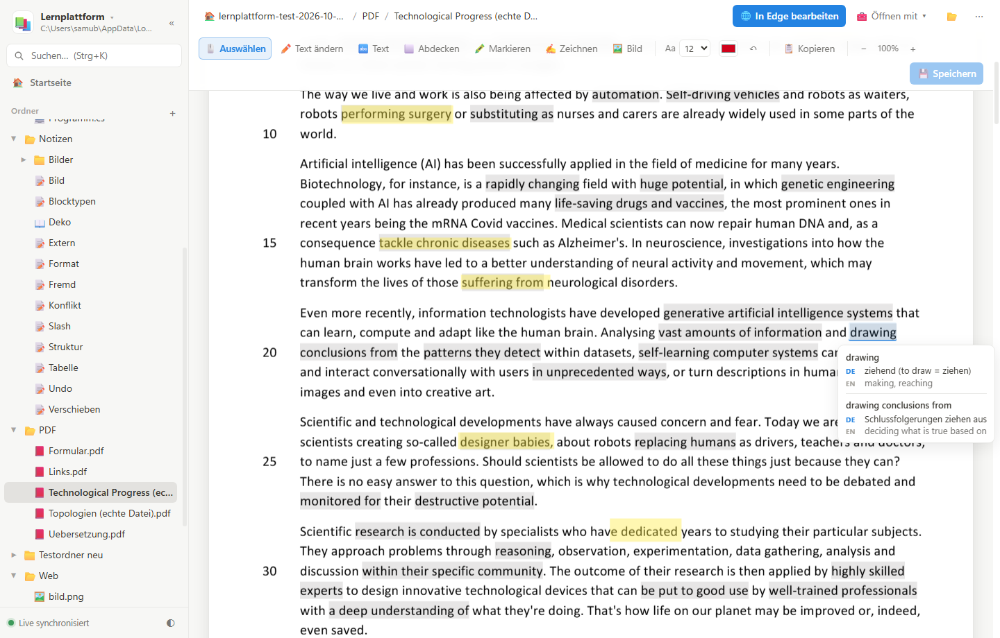
✓ OKIm neuen Ordner arbeiten: Seite ändern wird dort gespeichert1.2 s
Speichern und Live-Sync im zweiten Ordner funktionieren
✓ OKZurück zum ersten Ordner wechseln0.3 s
Menü: 📁lernplattform-test-2026-09-29T10-06-45C:\Users\samub\AppData\Local\Temp\lernplattform-test-2026-09-29T10-06-45 | ✅lernplattform-test-zweiter-ordner-2026-09-29
✓ OKOrdner aus der Liste entfernen (Dateien bleiben)0.1 s
Aus der Liste entfernt, Dateien unverändert